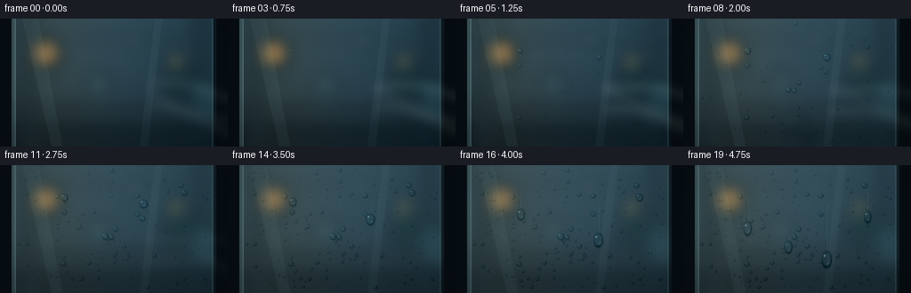
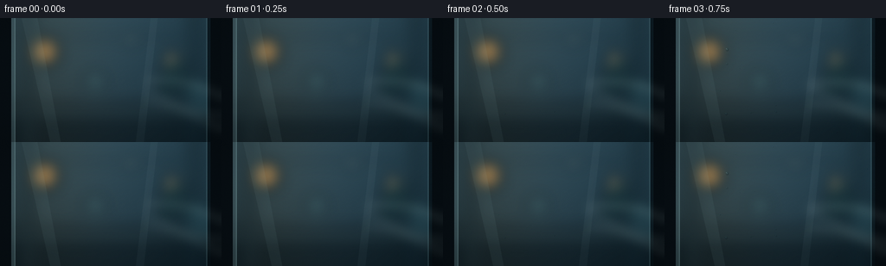

CODING AGENTS AS PIXEL WORLD MODELS
traex/GPT-5.6-Sol · phygen_111
点击播放 · 原生 RGB 像素
逐轮保存的候选
回放视频、检查图与代码变化。
每份候选均可单独播放。实际图片检查记录在下方工具轨迹中。
候选 01播放与检查图
点击播放 · 原生 RGB 像素

展开代码变化
--- 上一保存版本
+++ 本次保存版本
@@ -0,0 +1,236 @@
+from pathlib import Path
+import json, math
+import numpy as np
+from PIL import Image, ImageDraw, ImageFilter
+import artifact_io
+
+# Deterministic procedural macro photography of condensation on cold glass.
+ROOT = Path(__file__).resolve().parent
+SPEC = json.loads((ROOT / 'task_spec.json').read_text())
+W, H, N = SPEC['width'], SPEC['height'], SPEC['frames']
+S = 3
+WW, HH = W*S, H*S
+rng = np.random.default_rng(111)
+
+def smoothstep(a, b, x):
+ x = np.clip((x-a)/(b-a), 0, 1)
+ return x*x*(3-2*x)
+
+def make_background():
+ y, x = np.mgrid[0:HH, 0:WW]
+ xn, yn = x/WW, y/HH
+ # Blue cold daylight mixed with a distant warm interior.
+ top = np.array([35., 64., 78.])
+ bot = np.array([16., 37., 48.])
+ arr = top[None,None,:]*(1-yn[...,None]) + bot[None,None,:]*yn[...,None]
+ arr += (14*np.exp(-((xn-.50)/.36)**2))[...,None]
+ arr += (np.array([16.,9.,1.])[None,None,:] * np.exp(-((xn-.20)/.25)**2)[...,None])
+ im = Image.fromarray(np.uint8(np.clip(arr,0,255)), 'RGB')
+ # Defocused room beyond the pane: bokeh, mullions, counter and plant shadows.
+ far = Image.new('RGBA', (WW,HH), (0,0,0,0))
+ d = ImageDraw.Draw(far, 'RGBA')
+ d.rectangle((0, 99*S, WW, HH), fill=(8,19,24,130))
+ d.rectangle((0, 104*S, WW, 109*S), fill=(66,89,91,40))
+ d.rectangle((28*S, 0, 38*S, HH), fill=(5,20,28,65))
+ d.rectangle((219*S, 0, 230*S, HH), fill=(4,17,23,72))
+ d.rectangle((0, 19*S, WW, 24*S), fill=(7,24,31,45))
+ # Warm bokeh practical lights.
+ for cx,cy,r,col in [
+ (52,39,17,(255,172,78,120)), (198,47,11,(236,183,105,80)),
+ (151,25,7,(205,226,212,65)), (110,74,13,(94,155,151,45)),
+ (235,88,19,(73,133,141,45))]:
+ d.ellipse(((cx-r)*S,(cy-r)*S,(cx+r)*S,(cy+r)*S), fill=col)
+ # Out-of-focus plant silhouette at right.
+ d.line([(205*S,107*S),(199*S,67*S)], fill=(5,29,27,100), width=3*S)
+ for box in [(184,55,204,74),(197,47,216,66),(178,73,201,90),(202,68,226,86)]:
+ d.ellipse(tuple(v*S for v in box), fill=(6,37,33,85))
+ far = far.filter(ImageFilter.GaussianBlur(8*S))
+ im = Image.alpha_composite(im.convert('RGBA'), far)
+ # The physical frame and a thin cold glass bevel.
+ edge = Image.new('RGBA',(WW,HH),(0,0,0,0)); e=ImageDraw.Draw(edge,'RGBA')
+ e.rectangle((0,0,13*S,HH), fill=(7,14,19,255))
+ e.rectangle((243*S,0,WW,HH), fill=(6,13,18,255))
+ e.rectangle((13*S,0,17*S,HH), fill=(90,117,123,100))
+ e.rectangle((239*S,0,243*S,HH), fill=(2,10,15,170))
+ e.line((17*S,0,17*S,HH), fill=(164,214,218,80), width=1*S)
+ e.line((239*S,0,239*S,HH), fill=(114,164,174,55), width=1*S)
+ # Subtle vertical glass reflections.
+ e.polygon([(25*S,0),(43*S,0),(70*S,HH),(58*S,HH)], fill=(175,226,229,13))
+ e.polygon([(174*S,0),(182*S,0),(166*S,HH),(157*S,HH)], fill=(199,240,242,9))
+ return Image.alpha_composite(im, edge).convert('RGB')
+
+BASE_IM = make_background()
+BASE = np.asarray(BASE_IM).astype(np.float32)
+FROST = np.asarray(BASE_IM.filter(ImageFilter.GaussianBlur(3.2*S))).astype(np.float32)
+FROST = FROST*.76 + np.array([157.,190.,195.])[None,None,:]*.24
+
+# Stable low-frequency variation determines where microscopic condensation first catches.
+small = rng.random((18,32))
+noise_im = Image.fromarray(np.uint8(small*255)).resize((WW,HH), Image.Resampling.BICUBIC).filter(ImageFilter.GaussianBlur(4*S))
+NOISE = np.asarray(noise_im).astype(np.float32)/255.
+yy, xx = np.mgrid[0:HH,0:WW]
+xp, yp = xx/S, yy/S
+pane = smoothstep(13,19,xp)*smoothstep(244,238,xp)
+edge_affinity = np.clip((np.abs(xp-128)/125)*.13 + (1-yp/H)*.10, 0, .18)
+threshold = .14 + .34*NOISE - edge_affinity
+
+# Persistent micro-droplet population.
+drops = []
+for i in range(205):
+ x = rng.uniform(20,237)
+ y = rng.uniform(5,139)
+ # Most are pinprick beads; a few mature into larger lenses.
+ rf = float(np.clip(rng.lognormal(mean=.18, sigma=.52), .55, 3.15))
+ birth = float(np.clip(rng.beta(1.45,2.0)*.70 + .07, .06, .79))
+ aspect = float(rng.uniform(.86,1.10))
+ drops.append((x,y,rf,birth,aspect))
+
+# Carefully placed readable beads anchor the macro shot.
+heroes = [
+ dict(x=72., y=36., r=4.4, birth=.13, slide=.62, travel=35., wobble=1.2),
+ dict(x=161., y=43., r=5.2, birth=.17, slide=.55, travel=63., wobble=-1.0),
+ dict(x=118., y=80., r=4.0, birth=.25, slide=.82, travel=12., wobble=.7),
+ dict(x=207., y=31., r=3.8, birth=.30, slide=.76, travel=27., wobble=-.6),
+]
+
+def hero_state(h, t):
+ age = smoothstep(h['birth'], min(1,h['birth']+.42), t)
+ move = smoothstep(h['slide'], 1.0, t)
+ cx = h['x'] + h['wobble']*math.sin(move*math.pi)
+ cy = h['y'] + h['travel']*(move**1.28)
+ r = h['r']*(.32 + .68*math.sqrt(max(age,0))) * (1+.17*move)
+ return cx,cy,r,age,move
+
+def add_trail(arr, h, t):
+ cx,cy,r,age,move = hero_state(h,t)
+ if move <= .002: return arr
+ mask = Image.new('L',(WW,HH),0); d=ImageDraw.Draw(mask)
+ pts=[]
+ n=18
+ for j in range(n):
+ q=j/(n-1)
+ yy0=h['y'] + (cy-h['y'])*q
+ xx0=h['x'] + math.sin(q*4.1 + h['x'])*.45 + h['wobble']*math.sin(q*math.pi)*move
+ pts.append((int(xx0*S),int(yy0*S)))
+ d.line(pts, fill=int(145+50*move), width=max(2,int((.8+r*.20)*S)))
+ mask = mask.filter(ImageFilter.GaussianBlur(.55*S))
+ a=np.asarray(mask).astype(np.float32)[...,None]/255.
+ # A runnel locally clears the frosted veil, as a large drop scavenges microbeads.
+ cleared = BASE*.94 + np.array([105,151,158],dtype=np.float32)*.06
+ out=arr*(1-a*.74)+cleared*(a*.74)
+ # Fine specular edge on right side of trail.
+ line=Image.new('L',(WW,HH),0); ld=ImageDraw.Draw(line)
+ pts2=[(x+max(1,int(r*.22*S)),y) for x,y in pts]
+ ld.line(pts2,fill=int(75+65*move),width=max(1,S//2))
+ la=np.asarray(line.filter(ImageFilter.GaussianBlur(.3*S))).astype(np.float32)[...,None]/255.
+ out += la*np.array([45,65,66],dtype=np.float32)
+ return np.clip(out,0,255)
+
+def draw_drop(arr, cx, cy, rx, ry, strength=1.0):
+ # Elliptical water lens: refracted interior, shaded rim, cast shadow, and offset catchlight.
+ if rx < .22 or ry < .22: return
+ pad=2.0
+ x0=max(0,int((cx-rx-pad)*S)); x1=min(WW,int((cx+rx+pad)*S)+1)
+ y0=max(0,int((cy-ry-pad)*S)); y1=min(HH,int((cy+ry+pad)*S)+1)
+ if x1<=x0 or y1<=y0:return
+ gy,gx=np.mgrid[y0:y1,x0:x1]
+ nx=(gx/S-cx)/max(rx,.1); ny=(gy/S-cy)/max(ry,.1)
+ rr=np.sqrt(nx*nx+ny*ny)
+ inside=np.clip((1.035-rr)/.075,0,1)
+ inside=inside*inside*(3-2*inside)
+ # Soft shadow displaced down-right, making drops stand above the surface.
+ rs=np.sqrt(((gx/S-(cx+.42))/max(rx*1.04,.2))**2 + ((gy/S-(cy+.58))/max(ry*1.04,.2))**2)
+ shadow=np.clip((1.07-rs)/.10,0,1)*(1-inside)*.38*strength
+ patch=arr[y0:y1,x0:x1]
+ patch *= (1-shadow[...,None]*.42)
+ # Convex lens samples a slightly expanded area of the scene behind it.
+ sx=np.clip(np.rint(cx*S + nx*rx*S*1.42).astype(int),0,WW-1)
+ sy=np.clip(np.rint(cy*S + ny*ry*S*1.42).astype(int),0,HH-1)
+ refr=BASE[sy,sx]
+ refr=(refr-75)*1.16+75
+ refr=refr*.92+np.array([128.,175.,181.])[None,None,:]*.08
+ rim=np.exp(-((rr-.84)/.12)**2)
+ directional=np.clip((nx+ny+1.0)/2,0,1)
+ lens=refr - rim[...,None]*(12+24*directional[...,None])
+ # Bright crescent and point highlight on the upper-left of each bead.
+ cres=np.exp(-(((nx+.38)/.28)**2 + ((ny+.40)/.19)**2)*2.0)
+ glint=np.exp(-(((nx+.34)/.09)**2 + ((ny+.38)/.09)**2)*2.2)
+ lower=np.exp(-(((nx-.30)/.35)**2 + ((ny-.44)/.20)**2)*2.0)
+ lens += cres[...,None]*np.array([42.,56.,56.])*strength
+ lens += glint[...,None]*np.array([115.,135.,132.])*strength
+ lens += lower[...,None]*np.array([12.,22.,25.])
+ alpha=(inside*.91*strength)[...,None]
+ arr[y0:y1,x0:x1]=patch*(1-alpha)+lens*alpha
+
+def vapor_wisps(arr, t):
+ # Humid air is only explicit early on; it fades as water collects on the pane.
+ amt=(1-smoothstep(.38,.78,t))*(.32+.10*math.sin(t*8))
+ if amt<=.01:return arr
+ layer=Image.new('L',(WW,HH),0); d=ImageDraw.Draw(layer)
+ shift=18*t
+ for k,(y0,phase) in enumerate([(111,.2),(125,1.5),(94,2.6)]):
+ pts=[]
+ for j in range(28):
+ q=j/27
+ x=270-102*q-shift*(.3+.15*k)
+ y=y0-22*q+7*math.sin(q*3.8+phase+t*3)
+ pts.append((int(x*S),int(y*S)))
+ d.line(pts,fill=int(92*amt),width=(5+k)*S)
+ a=np.asarray(layer.filter(ImageFilter.GaussianBlur(5*S))).astype(np.float32)[...,None]/255.
+ mist=np.array([189.,218.,216.])
+ return arr*(1-a)+mist*a
+
+def make_frame(i):
+ t=i/(N-1)
+ # Timelapse pacing: a brief clear read, then rapid nucleation and slower coalescence.
+ progress=smoothstep(.02,.92,t)
+ local=smoothstep(threshold-.08, threshold+.22, progress)
+ haze_alpha=pane*local*(.10+.24*smoothstep(.10,.92,t))
+ # retain slight optical clarity in the center while making the fog's spread obvious
+ haze_alpha *= .88 + .12*np.abs(xp-128)/120
+ arr=BASE*(1-haze_alpha[...,None])+FROST*haze_alpha[...,None]
+ arr=vapor_wisps(arr,t)
+ for h in heroes:
+ arr=add_trail(arr,h,t)
+ # Microbeads: nearby beads are scavenged by mature descending hero droplets.
+ for x,y,rf,birth,aspect in drops:
+ if t < birth: continue
+ scavenged=False
+ for h in heroes:
+ hx,hy,hr,ha,hm=hero_state(h,t)
+ if hm>.02 and abs(x-hx)<max(2.0,hr*.7) and h['y']-2<y<hy+3:
+ scavenged=True; break
+ if scavenged: continue
+ age=smoothstep(birth,min(1,birth+.38),t)
+ r=rf*(.22+.78*math.sqrt(max(age,0)))
+ draw_drop(arr,x,y,r,r*aspect,.72+.22*age)
+ # A few satellite beads form in the wet tracks.
+ for h in heroes:
+ hx,hy,hr,ha,hm=hero_state(h,t)
+ if ha<=0: continue
+ # The large descending drop elongates under gravity.
+ elong=1 + .72*hm
+ draw_drop(arr,hx,hy,hr,hr*elong,.98)
+ if hm>.2:
+ for q,side in [(.19,-1),(.43,1),(.68,-1)]:
+ if q < hm:
+ sy=h['y']+(hy-h['y'])*q/max(hm,.01)
+ sx=h['x']+side*(1.2+q)
+ draw_drop(arr,sx,sy,.55+q*.35,.7+q*.45,.78)
+ # Thin cool reflection at pane edges remains visible through condensation.
+ edge=np.zeros((HH,WW,1),np.float32)
+ edge[:,17*S:18*S,0]=.10; edge[:,238*S:239*S,0]=.07
+ arr=arr*(1-edge)+np.array([194.,232.,232.])[None,None,:]*edge
+ # Cinematic vignette and very fine sensor grain (stable, low amplitude).
+ cy=(yp-H/2)/(H*.75); cx=(xp-W/2)/(W*.72)
+ vig=np.clip(1-.16*(cx*cx+cy*cy),.79,1)[...,None]
+ arr*=vig
+ grain=np.random.default_rng(900+i).normal(0,.75,(HH,WW,1))
+ arr+=grain
+ im=Image.fromarray(np.uint8(np.clip(arr,0,255)),'RGB')
+ im=im.resize((W,H),Image.Resampling.LANCZOS)
+ return np.asarray(im,dtype=np.uint8)
+
+frames=np.stack([make_frame(i) for i in range(N)],axis=0)
+artifact_io.save(frames, ROOT)
+print(f'saved {frames.shape} {frames.dtype} to {ROOT}')
可观测工具轨迹
实际执行的命令与返回图片。
命令 1exit 0
/bin/bash -lc "cat prompt.txt && printf '\\n--- GENERATION_RULES ---\\n' && cat GENERATION_RULES.md && printf '\\n--- TASK_SPEC ---\\n' && cat task_spec.json"
命令 2exit 0
/bin/bash -lc "find . -maxdepth 2 -type f -printf '%p\\n' | sort && printf '\\n-- tools --\\n' && command -v blender || true; command -v ffmpeg || true; command -v python3 || true"
命令 3exit 0
/bin/bash -lc "sed -n '1,240p' artifact_io.py"
命令 4exit 0
/bin/bash -lc "cat > generate.py <<'PY'
from pathlib import Path
import json, math
import numpy as np
from PIL import Image, ImageDraw, ImageFilter
import artifact_io
# Deterministic procedural macro photography of condensation on cold glass.
ROOT = Path(__file__).resolve().parent
SPEC = json.loads((ROOT / 'task_spec.json').read_text())
W, H, N = SPEC['width'], SPEC['height'], SPEC['frames']
S = 3
WW, HH = W*S, H*S
rng = np.random.default_rng(111)
def smoothstep(a, b, x):
x = np.clip((x-a)/(b-a), 0, 1)
return x*x*(3-2*x)
def make_background():
y, x = np.mgrid[0:HH, 0:WW]
xn, yn = x/WW, y/HH
# Blue cold daylight mixed with a distant warm interior.
top = np.array([35., 64., 78.])
bot = np.array([16., 37., 48.])
arr = top[None,None,:]*(1-yn[...,None]) + bot[None,None,:]*yn[...,None]
arr += (14*np.exp(-((xn-.50)/.36)**2))[...,None]
arr += (np.array([16.,9.,1.])[None,None,:] * np.exp(-((xn-.20)/.25)**2)[...,None])
im = Image.fromarray(np.uint8(np.clip(arr,0,255)), 'RGB')
# Defocused room beyond the pane: bokeh, mullions, counter and plant shadows.
far = Image.new('RGBA', (WW,HH), (0,0,0,0))
d = ImageDraw.Draw(far, 'RGBA')
d.rectangle((0, 99*S, WW, HH), fill=(8,19,24,130))
d.rectangle((0, 104*S, WW, 109*S), fill=(66,89,91,40))
d.rectangle((28*S, 0, 38*S, HH), fill=(5,20,28,65))
d.rectangle((219*S, 0, 230*S, HH), fill=(4,17,23,72))
d.rectangle((0, 19*S, WW, 24*S), fill=(7,24,31,45))
# Warm bokeh practical lights.
for cx,cy,r,col in [
(52,39,17,(255,172,78,120)), (198,47,11,(236,183,105,80)),
(151,25,7,(205,226,212,65)), (110,74,13,(94,155,151,45)),
(235,88,19,(73,133,141,45))]:
d.ellipse(((cx-r)*S,(cy-r)*S,(cx+r)*S,(cy+r)*S), fill=col)
# Out-of-focus plant silhouette at right.
d.line([(205*S,107*S),(199*S,67*S)], fill=(5,29,27,100), width=3*S)
for box in [(184,55,204,74),(197,47,216,66),(178,73,201,90),(202,68,226,86)]:
d.ellipse(tuple(v*S for v in box), fill=(6,37,33,85))
far = far.filter(ImageFilter.GaussianBlur(8*S))
im = Image.alpha_composite(im.convert('RGBA'), far)
# The physical frame and a thin cold glass bevel.
edge = Image.new('RGBA',(WW,HH),(0,0,0,0)); e=ImageDraw.Draw(edge,'RGBA')
e.rectangle((0,0,13*S,HH), fill=(7,14,19,255))
e.rectangle((243*S,0,WW,HH), fill=(6,13,18,255))
e.rectangle((13*S,0,17*S,HH), fill=(90,117,123,100))
e.rectangle((239*S,0,243*S,HH), fill=(2,10,15,170))
e.line((17*S,0,17*S,HH), fill=(164,214,218,80), width=1*S)
e.line((239*S,0,239*S,HH), fill=(114,164,174,55), width=1*S)
# Subtle vertical glass reflections.
e.polygon([(25*S,0),(43*S,0),(70*S,HH),(58*S,HH)], fill=(175,226,229,13))
e.polygon([(174*S,0),(182*S,0),(166*S,HH),(157*S,HH)], fill=(199,240,242,9))
return Image.alpha_composite(im, edge).convert('RGB')
BASE_IM = make_background()
BASE = np.asarray(BASE_IM).astype(np.float32)
FROST = np.asarray(BASE_IM.filter(ImageFilter.GaussianBlur(3.2*S))).astype(np.float32)
FROST = FROST*.76 + np.array([157.,190.,195.])[None,None,:]*.24
# Stable low-frequency variation determines where microscopic condensation first catches.
small = rng.random((18,32))
noise_im = Image.fromarray(np.uint8(small*255)).resize((WW,HH), Image.Resampling.BICUBIC).filter(ImageFilter.GaussianBlur(4*S))
NOISE = np.asarray(noise_im).astype(np.float32)/255.
yy, xx = np.mgrid[0:HH,0:WW]
xp, yp = xx/S, yy/S
pane = smoothstep(13,19,xp)*smoothstep(244,238,xp)
edge_affinity = np.clip((np.abs(xp-128)/125)*.13 + (1-yp/H)*.10, 0, .18)
threshold = .14 + .34*NOISE - edge_affinity
# Persistent micro-droplet population.
drops = []
for i in range(205):
x = rng.uniform(20,237)
y = rng.uniform(5,139)
# Most are pinprick beads; a few mature into larger lenses.
rf = float(np.clip(rng.lognormal(mean=.18, sigma=.52), .55, 3.15))
birth = float(np.clip(rng.beta(1.45,2.0)*.70 + .07, .06, .79))
aspect = float(rng.uniform(.86,1.10))
drops.append((x,y,rf,birth,aspect))
# Carefully placed readable beads anchor the macro shot.
heroes = [
dict(x=72., y=36., r=4.4, birth=.13, slide=.62, travel=35., wobble=1.2),
dict(x=161., y=43., r=5.2, birth=.17, slide=.55, travel=63., wobble=-1.0),
dict(x=118., y=80., r=4.0, birth=.25, slide=.82, travel=12., wobble=.7),
dict(x=207., y=31., r=3.8, birth=.30, slide=.76, travel=27., wobble=-.6),
]
def hero_state(h, t):
age = smoothstep(h['birth'], min(1,h['birth']+.42), t)
move = smoothstep(h['slide'], 1.0, t)
cx = h['x'] + h['wobble']*math.sin(move*math.pi)
cy = h['y'] + h['travel']*(move**1.28)
r = h['r']*(.32 + .68*math.sqrt(max(age,0))) * (1+.17*move)
return cx,cy,r,age,move
def add_trail(arr, h, t):
cx,cy,r,age,move = hero_state(h,t)
if move <= .002: return arr
mask = Image.new('L',(WW,HH),0); d=ImageDraw.Draw(mask)
pts=[]
n=18
for j in range(n):
q=j/(n-1)
yy0=h['y'] + (cy-h['y'])*q
xx0=h['x'] + math.sin(q*4.1 + h['x'])*.45 + h['wobble']*math.sin(q*math.pi)*move
pts.append((int(xx0*S),int(yy0*S)))
d.line(pts, fill=int(145+50*move), width=max(2,int((.8+r*.20)*S)))
mask = mask.filter(ImageFilter.GaussianBlur(.55*S))
a=np.asarray(mask).astype(np.float32)[...,None]/255.
# A runnel locally clears the frosted veil, as a large drop scavenges microbeads.
cleared = BASE*.94 + np.array([105,151,158],dtype=np.float32)*.06
out=arr*(1-a*.74)+cleared*(a*.74)
# Fine specular edge on right side of trail.
line=Image.new('L',(WW,HH),0); ld=ImageDraw.Draw(line)
pts2=[(x+max(1,int(r*.22*S)),y) for x,y in pts]
ld.line(pts2,fill=int(75+65*move),width=max(1,S//2))
la=np.asarray(line.filter(ImageFilter.GaussianBlur(.3*S))).astype(np.float32)[...,None]/255.
out += la*np.array([45,65,66],dtype=np.float32)
return np.clip(out,0,255)
def draw_drop(arr, cx, cy, rx, ry, strength=1.0):
# Elliptical water lens: refracted interior, shaded rim, cast shadow, and offset catchlight.
if rx < .22 or ry < .22: return
pad=2.0
x0=max(0,int((cx-rx-pad)*S)); x1=min(WW,int((cx+rx+pad)*S)+1)
y0=max(0,int((cy-ry-pad)*S)); y1=min(HH,int((cy+ry+pad)*S)+1)
if x1<=x0 or y1<=y0:return
gy,gx=np.mgrid[y0:y1,x0:x1]
nx=(gx/S-cx)/max(rx,.1); ny=(gy/S-cy)/max(ry,.1)
rr=np.sqrt(nx*nx+ny*ny)
inside=np.clip((1.035-rr)/.075,0,1)
inside=inside*inside*(3-2*inside)
# Soft shadow displaced down-right, making drops stand above the surface.
rs=np.sqrt(((gx/S-(cx+.42))/max(rx*1.04,.2))**2 + ((gy/S-(cy+.58))/max(ry*1.04,.2))**2)
shadow=np.clip((1.07-rs)/.10,0,1)*(1-inside)*.38*strength
patch=arr[y0:y1,x0:x1]
patch *= (1-shadow[...,None]*.42)
# Convex lens samples a slightly expanded area of the scene behind it.
sx=np.clip(np.rint(cx*S + nx*rx*S*1.42).astype(int),0,WW-1)
sy=np.clip(np.rint(cy*S + ny*ry*S*1.42).astype(int),0,HH-1)
refr=BASE[sy,sx]
refr=(refr-75)*1.16+75
refr=refr*.92+np.array([128.,175.,181.])[None,None,:]*.08
rim=np.exp(-((rr-.84)/.12)**2)
directional=np.clip((nx+ny+1.0)/2,0,1)
lens=refr - rim[...,None]*(12+24*directional[...,None])
# Bright crescent and point highlight on the upper-left of each bead.
cres=np.exp(-(((nx+.38)/.28)**2 + ((ny+.40)/.19)**2)*2.0)
glint=np.exp(-(((nx+.34)/.09)**2 + ((ny+.38)/.09)**2)*2.2)
lower=np.exp(-(((nx-.30)/.35)**2 + ((ny-.44)/.20)**2)*2.0)
lens += cres[...,None]*np.array([42.,56.,56.])*strength
lens += glint[...,None]*np.array([115.,135.,132.])*strength
lens += lower[...,None]*np.array([12.,22.,25.])
alpha=(inside*.91*strength)[...,None]
arr[y0:y1,x0:x1]=patch*(1-alpha)+lens*alpha
def vapor_wisps(arr, t):
# Humid air is only explicit early on; it fades as water collects on the pane.
amt=(1-smoothstep(.38,.78,t))*(.32+.10*math.sin(t*8))
if amt<=.01:return arr
layer=Image.new('L',(WW,HH),0); d=ImageDraw.Draw(layer)
shift=18*t
for k,(y0,phase) in enumerate([(111,.2),(125,1.5),(94,2.6)]):
pts=[]
for j in range(28):
q=j/27
x=270-102*q-shift*(.3+.15*k)
y=y0-22*q+7*math.sin(q*3.8+phase+t*3)
pts.append((int(x*S),int(y*S)))
d.line(pts,fill=int(92*amt),width=(5+k)*S)
a=np.asarray(layer.filter(ImageFilter.GaussianBlur(5*S))).astype(np.float32)[...,None]/255.
mist=np.array([189.,218.,216.])
return arr*(1-a)+mist*a
def make_frame(i):
t=i/(N-1)
# Timelapse pacing: a brief clear read, then rapid nucleation and slower coalescence.
progress=smoothstep(.02,.92,t)
local=smoothstep(threshold-.08, threshold+.22, progress)
haze_alpha=pane*local*(.10+.24*smoothstep(.10,.92,t))
# retain slight optical clarity in the center while making the fog's spread obvious
haze_alpha *= .88 + .12*np.abs(xp-128)/120
arr=BASE*(1-haze_alpha[...,None])+FROST*haze_alpha[...,None]
arr=vapor_wisps(arr,t)
for h in heroes:
arr=add_trail(arr,h,t)
# Microbeads: nearby beads are scavenged by mature descending hero droplets.
for x,y,rf,birth,aspect in drops:
if t < birth: continue
scavenged=False
for h in heroes:
hx,hy,hr,ha,hm=hero_state(h,t)
if hm>.02 and abs(x-hx)<max(2.0,hr*.7) and h['y']-2<y<hy+3:
scavenged=True; break
if scavenged: continue
age=smoothstep(birth,min(1,birth+.38),t)
r=rf*(.22+.78*math.sqrt(max(age,0)))
draw_drop(arr,x,y,r,r*aspect,.72+.22*age)
# A few satellite beads form in the wet tracks.
for h in heroes:
hx,hy,hr,ha,hm=hero_state(h,t)
if ha<=0: continue
# The large descending drop elongates under gravity.
elong=1 + .72*hm
draw_drop(arr,hx,hy,hr,hr*elong,.98)
if hm>.2:
for q,side in [(.19,-1),(.43,1),(.68,-1)]:
if q < hm:
sy=h['y']+(hy-h['y'])*q/max(hm,.01)
sx=h['x']+side*(1.2+q)
draw_drop(arr,sx,sy,.55+q*.35,.7+q*.45,.78)
# Thin cool reflection at pane edges remains visible through condensation.
edge=np.zeros((HH,WW,1),np.float32)
edge[:,17*S:18*S,0]=.10; edge[:,238*S:239*S,0]=.07
arr=arr*(1-edge)+np.array([194.,232.,232.])[None,None,:]*edge
# Cinematic vignette and very fine sensor grain (stable, low amplitude).
cy=(yp-H/2)/(H*.75); cx=(xp-W/2)/(W*.72)
vig=np.clip(1-.16*(cx*cx+cy*cy),.79,1)[...,None]
arr*=vig
grain=np.random.default_rng(900+i).normal(0,.75,(HH,WW,1))
arr+=grain
im=Image.fromarray(np.uint8(np.clip(arr,0,255)),'RGB')
im=im.resize((W,H),Image.Resampling.LANCZOS)
return np.asarray(im,dtype=np.uint8)
frames=np.stack([make_frame(i) for i in range(N)],axis=0)
artifact_io.save(frames, ROOT)
print(f'saved {frames.shape} {frames.dtype} to {ROOT}')
PY
python3 generate.py
ls -lh pixels.npz inspection.png transition_check.png index.html frames/00.png frames/19.png"命令 5exit 0
/bin/bash -lc "python3 - <<'PY'
from pathlib import Path
import json, numpy as np
from PIL import Image
p=Path('.')
s=json.loads((p/'task_spec.json').read_text())
z=np.load(p/'pixels.npz')['pixels']
imgs=[np.asarray(Image.open(p/'frames'/f'{i:02d}.png').convert('RGB')) for i in range(s['frames'])]
a=np.stack(imgs)
assert a.shape==(20,144,256,3) and a.dtype==np.uint8
assert z.shape==(144,256,20) and z.dtype==np.uint32
# Ensure a real evolving sequence, not repeated stills.
diffs=np.mean(np.abs(a[1:].astype(np.int16)-a[:-1].astype(np.int16)),axis=(1,2,3))
assert np.all(diffs>0.05)
required=['generate.py','pixels.npz','index.html','inspection.png','transition_check.png']
assert all((p/x).is_file() and (p/x).stat().st_size>0 for x in required)
print('validated:', a.shape, a.dtype)
print('frame-diff mean/min/max:', round(float(diffs.mean()),3), round(float(diffs.min()),3), round(float(diffs.max()),3))
print('RGB range:', int(a.min()), int(a.max()), 'unique frames:', len({x.tobytes() for x in a}))
PY"视觉工具实际返回图片 1

视觉工具实际返回图片 2

视觉工具实际返回图片 3
保存候选 1 份；完成命令 5 次；可验证图片返回 3 张。原始 API 响应与完整日志保留在本地。